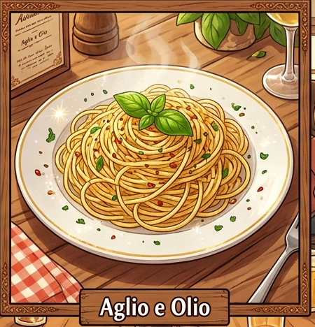

Description
Aglio e Olio is a traditional Italian pasta dish made with just a handful of ingredients. The combination of golden garlic, extra virgin olive oil, chili flakes, and fresh parsley creates a simple yet incredibly flavorful meal that's ready in under 20 minutes.

🛒 Ingredients
👨🍳 Instructions
If needed, add a little reserved pasta water to create a silky sauce.
Mix in the chopped parsley and season with salt and black pepper.
Serve immediately with grated Parmesan cheese, if desired.
⏱️ Recipe Information
Preparation Time: 5 minutesCooking Time: 15 minutes
Total Time: 20 minutes
Servings: 2
Difficulty: Easy
Use fresh garlic and good-quality extra virgin olive oil for the best flavor. Cook the garlic gently over low heat so it becomes fragrant and golden without burning, as burnt garlic can make the dish bitter.
🍽️ Best Served With
Garlic bread
Caesar salad
Roasted vegetables
Lemon iced tea or sparkling water